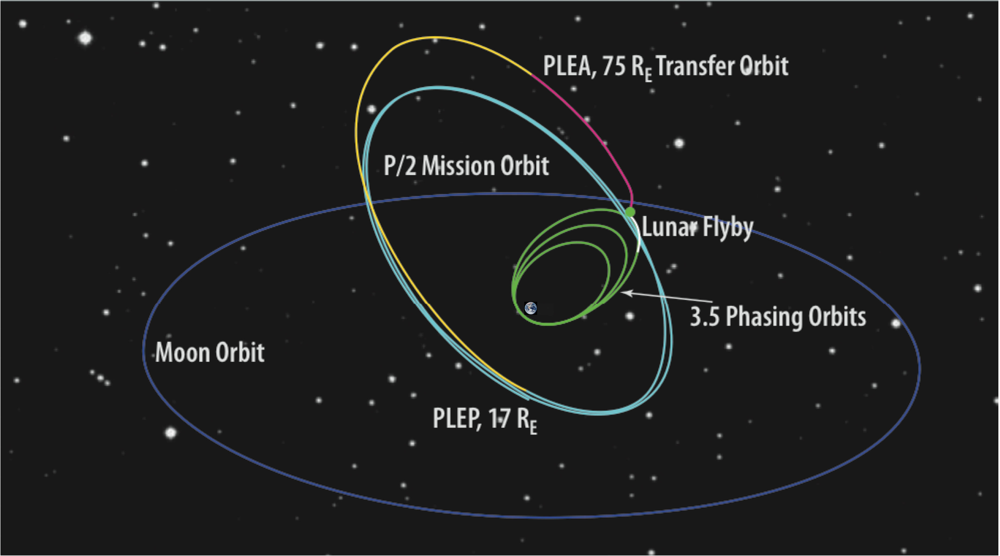
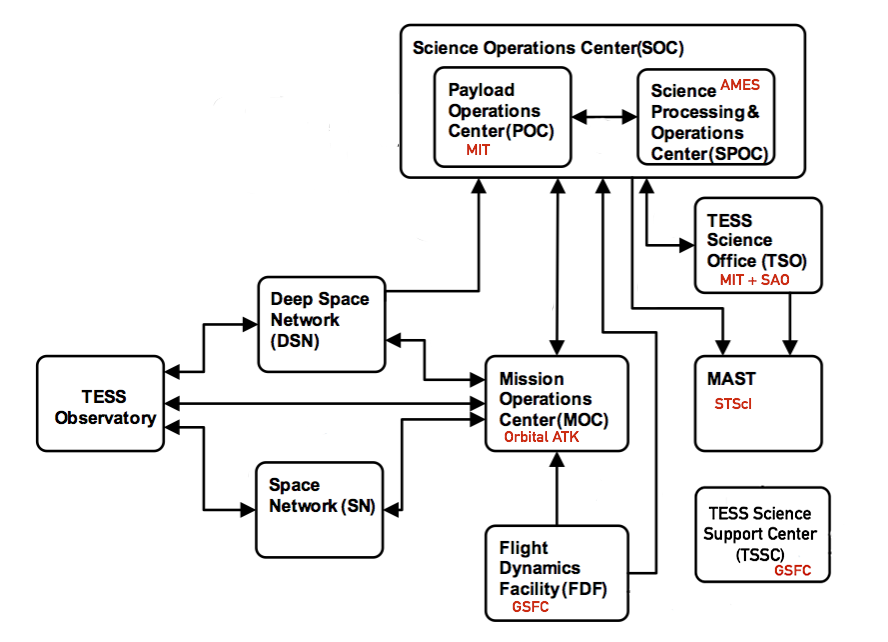

Launch and orbit
TESS launched successfully on April 18 from Cape Canaveral Air Force Station aboard a SpaceX Falcon 9 rocket.
The Falcon 9 is a 2 stage, liquid oxygen and kerosene fueled rocket. The first stage is reusable and has 9 Merlin 1D engines, the second stage has a single Merlin engine. The system is designed for safe and efficient transport of satellites, cargo, and eventually crew, to low-earth orbit. TESS is the first NASA Astrophysics satellite mission to be launched under a contract with SpaceX.
TESS will observe from a unique elliptical high Earth orbit (HEO) that will provide an unobstructed view of its field to obtain continuous light curves and a more stable platform for precise photometry than the low Earth orbit. The launch will carry the observatory to parking orbit inclined by 28.5 degrees. The high Earth orbit is achieved through a series of propulsion system burns and a lunar flyby. Two burns raise the orbit apogee to 400,000 km, one at perigee of the first phasing orbit and another at perigee of the second phasing orbit. Another small adjustment is made before a lunar gravitational assist raises the ecliptic inclination to ~40 degrees. The final apogee and 13.7 day orbital period are achieved through a final period-adjustment maneuver after the lunar flyby. Final orbit is achieved around 60 days after launch and science operations begin shortly afterward.

Schematic of maneuvers and encounters leading to the final TESS orbit (light blue). The observatory orbits with a period of 13.7 days in a 2:1 resonance with the Moon. PLEA and PLEP are the post-lunar-encounter-apogee and -perigee, respectively. Image Credit: Ricker et al. 2015
The final orbit is elliptical with a period of 13.7 days and nominal perigee and apogee of 17 Earth radii and 59 Earth radii, respectively. The orbit places the spacecraft in a 2:1 resonance with the Moon and is inclined with respect to the Ecliptic plane. This avoids lengthy eclipses of the Earth and Moon through the FOV. The large apogee and perigee keep the spacecraft above the Earth's radiation belts and provide a nearly constant thermal environment for the stable -75 degrees C operation of the CCDs. The orbit is operationally stable due to the Moon leading or lagging the apogee by about 90 degrees, effectively averaging out lunar perturbations. The period and semi-major axis are relatively stable, with long term inclination and eccentricity exchanges over periods of 8-12 years. There are additional short term perturbations caused by the Sun with a period of 6 months. The TESS high Earth orbit is stable for decades or longer and requires no propulsion for station-keeping.
At the TESS orbit perigee (17 Earth radii), science operations are interrupted for no more than 16 h to point TESS's antenna toward Earth, downlink data, and resume observing. This timeframe includes the nominal 4-h period for Ka-band science data downlink using NASA's Deep Space Network (DSN). Occasionally during this period, TESS will also use its hydrazine thrusters to unload angular momentum built up from solar photon pressure.
Field of view
TESS is equipped with four CCD cameras that have adjacent field-of-views to produce a 4 x 1 array, or 'observing sector', yielding a combined field-of-view of 96 x 24 degrees


Time sampling
TESS will collect brightness measurements of about 200,000 preselected stars ('postage stamps') every 2 minutes, and Full Frame Images (FFIs) (all pixels) at 30 minute cadence. The TESS cameras have an exposure time of 2 seconds, and the images are stacked for each 2 or 30 minute cadence onboard the spacecraft before they are compressed and stored in the solid state recorder. Each sector is observed for two orbits, each of which produces over 10k postage stamps and over 600 FFIs.
Schematic of TESS time sampling, data processing, and storage.
Observing strategy
TESS will survey over 90% of the sky by observing 26 individual sectors, 13 in the southern hemisphere and 13 in the northern hemispheres. Each hemisphere will be observed for 1 year each in the 2 year prime mission, beginning in the south. Each sector will be observed for two orbits (27.4 days total), once complete TESS will re-orient to the next sector moving eastward until the hemisphere has been tiled by 13 sectors.
Within each 96 x 24 degree sector TESS will observe 15,000 target stars on a 2 minute cadence and collect full frame images at 30 minute cadence. The sectors have ecliptic latitudes from 6 degrees to the ecliptic pole with increasing overlap at higher latitudes. There will be over 350 days of continuous coverage in the Continuous Viewing Zone (CVZ) at the ecliptic poles, which corresponds to the region accessible to NASA's upcoming James Webb Space Telescope.
A video illustrating the TESS survey strategy, along with the pathway to the spacecraft orbit, can be seen here.

Schematic showing observing baselines on the celestial sphere including sector overlap regions. The dashed black circle enclosing the Ecliptic pole shows the region where the JWST has continuous viewing capabilities.
Science data flow
The flow of data from the spacecraft to its final archive involves participation from multiple institutions that make up the TESS project team, as described below.

Data from the TESS spacecraft will be downloaded through the Deep Space Network (DSN) and delivered to the Payload Operations Center (POC) at the Massachusetts Institute ofTechnology (MIT). The POC sends uncalibrated requantized pixel data, target lists, spacecraft configuration and engineering data, and focal plane characterization models (for calibration) to the Science Processing Operations Center (SPOC) at NASA Ames. The SPOC calibrates the science data in two steps, first by the orbit and then by the sector. The SPOC uses instrument calibration models provided by the POC to calibrate all science data. Once a full sector is calibrated the transiting planet search software is run by the SPOC to identify and flag threshold crossing events (TCEs). Calibrated target pixels and FFIs, light curves generated from 2-min cadence targets, and TCEs are sent to the TESS Science Office (TSO, which includes MIT and the Smithsonian Astrophysical Observatory, SAO). The TSO is responsible for detailed analysis of TCEs and the identification of TESS Objects of Interest (TOIs). The TSO will deliver lists of TOIs to the Mikulski Archive for Space Telescopes (MAST, located at the Space Telescope Science Institute, STScI) along with dispositions and information documenting the vetting process for each TOI on a regular schedule, nominally every four months. The processed data and meta-data from the SPOC will be archived at MAST. MAST is the primary science data archive for TESS and will provide tools to search and retrieve data. The TESS Science Support Center operates the Guest Investigator (GI) Program, which will supply a list of GI targets to the POC, and the GI proposers will retrieve their data from the MAST. All data archived at MAST will have no proprietary period and will be publicly available.
Commissioning and calibration
TESS will undergo a ~60 day commissioning phase that begins shortly after launch. The commissioning period is separated into four phases that include spacecraft initialization, instrument initialization, fine pointing updates, and instrument calibration. During spacecraft initialization, TESS will undergo various checkouts and parameter updates of of key spacecraft systems involved in communication and attitude control. This includes the S-band receiver, star trackers, and propulsion system. This phase also includes the first spacecraft maneuvers to reach the final orbit and will last 7 days.
In the second phase of commissioning, instrument initialization, the DHU and cameras are powered on and undergo initial tests to check their health. The powerup of the 4 cameras will be done one camera at a time and include first light. This phase also includes the initial alignment of each camera to transform the on-orbit boresights into the spacecraft reference frame. After this initial camera alignment, on day 10 of commissioning, the third phase begins. In phase 3, three fine pointing updates will be performed, the first checks of on board cosmic ray mitigation will be performed, and the first FFI's will be obtained. Two orbit maneuvers will also be performed in this phase. The fine pointing updates phase ends on day 16 of commissioning.
During commissioning phase 4, instrument calibration, the first target pixel masks will be uploaded to the spacecraft, a guide star table will be uploaded, scattered light calibrations will be performed for each camera, and two calibration sequence will be uploaded and performed. These calibration sequences include taking data on bright stars to characterize the camera CCDs. This phase also includes the lunar encounter and final period adjustment maneuver to inject TESS into its final high earth elliptical orbit. The instrument calibration phase ends on day 55 after launch. TESS will then begin science collection with an initial science test orbit and data downlink. Nominal science operations and the collection of data in the first observing sector start day 68 of the mission.